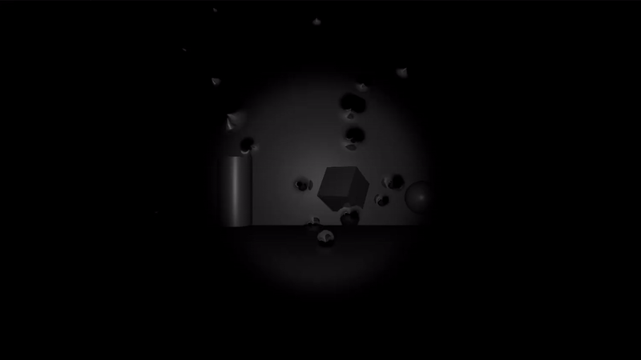

Heart Rate Horror: Biometric Horror Experience
Overview
An interactive horror installation that responds to the player's live heart rate, streamed in via the Pulsoid webhook API. Boid-flocking creatures move in sync with the player's heartbeat, approaching when calm and fleeing the instant the player turns to face them.
The Problem
The design depended on the creatures staying visually ambiguous: recognizable as threats, but never clearly resolved into a shape, to keep the tension of not knowing what they actually were. An early raymarched-metaball approach nailed that ambiguity but ran at only 20fps, and lost its mystery on repeated viewing anyway.
Initial raymarched metaball approaches achieved only 20fps and lost their mystery upon repeated viewing.
Once the boid/shader approach replaced it, a second problem showed up: reading boid state back from the GPU to the CPU each frame created a readback bottleneck that stalled the pipeline.
The Solution
The creatures are rendered with a screen-space distortion effect that warps the surrounding image instead of directly rendering geometry, preserving the ambiguity the raymarching version had without the performance cost. The GPU-to-CPU readback bottleneck was solved by encoding boid data using InterlockedMax, avoiding a full synchronous readback every frame.
Result
A custom post-process pipeline spanning fragment and compute shaders, running at 90-110fps with 50 boids on screen simultaneously.